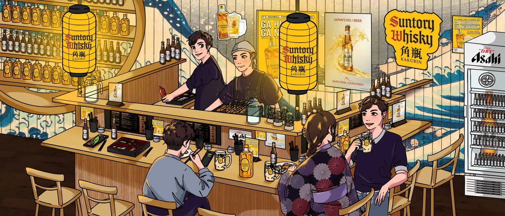
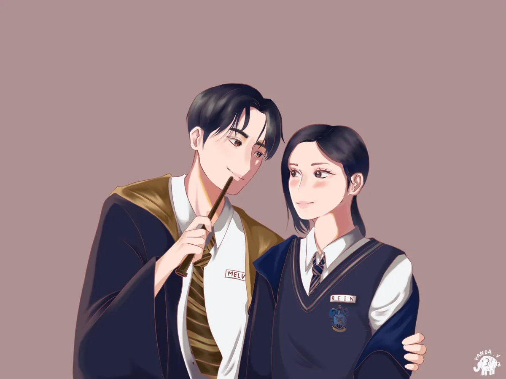
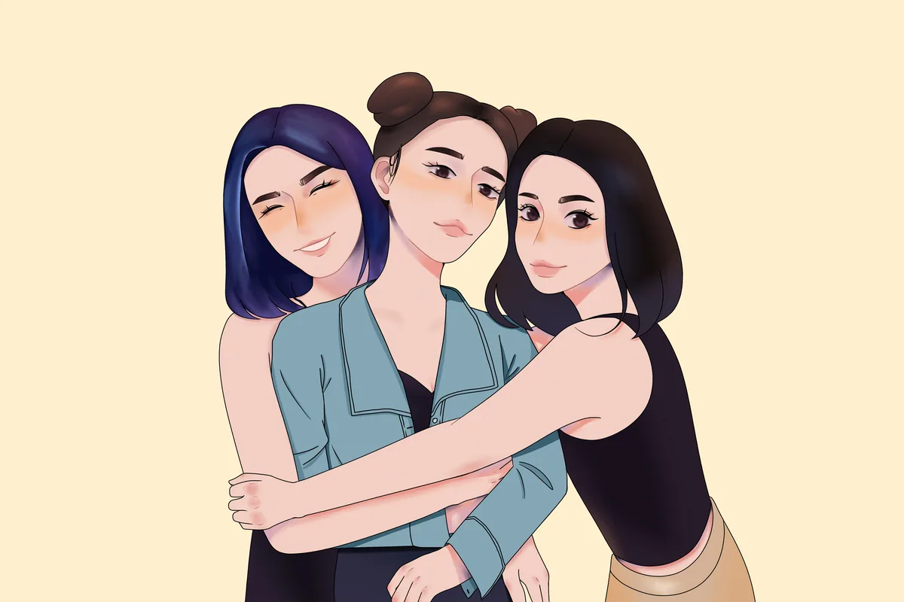

Annisa Raihan Djatmiko
Eca
About
CV
Work
Contact
01 Logofolio
02 Social Media & Print
03 Motion Graphics
04 Illustration
04
Illustration
Commercial · Mural

YASHINOKI YOKOCHO / Mural
Digital Illustration · Suntory & Asahi · Plaza Senayan · 274.5 × 117.5 cm · 2025
Personal Project

CHARACTER ILLUSTRATION
Digital Art · Personal Projects
Personal Project

FIGURE ILLUSTRATION
Digital Art · Personal Projects